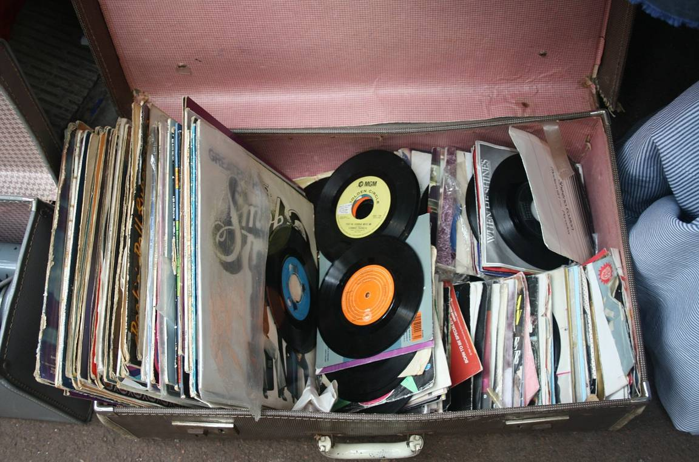
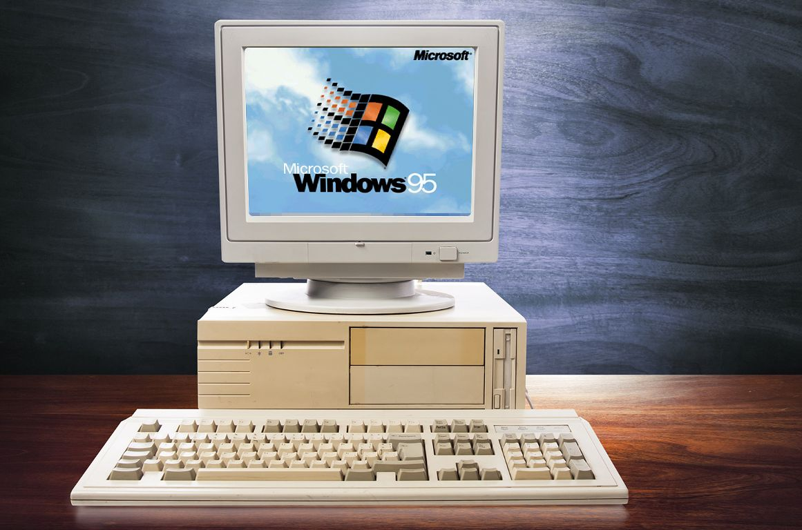
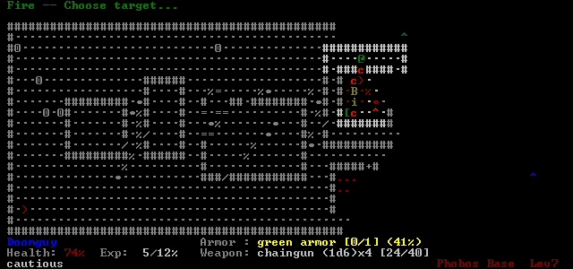
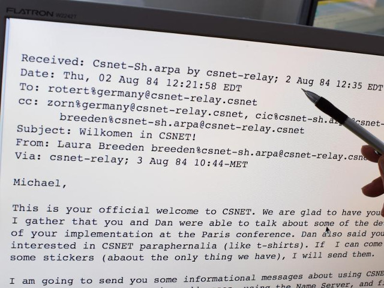
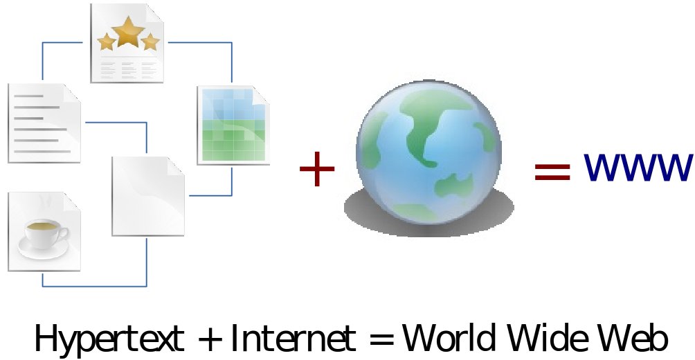
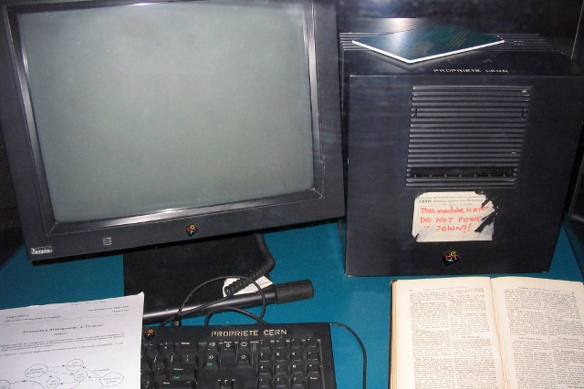
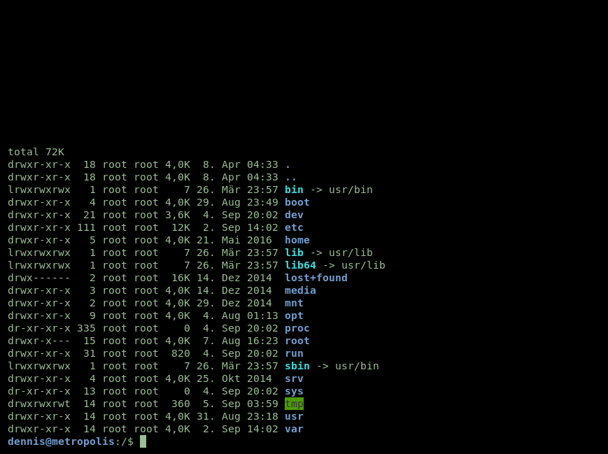
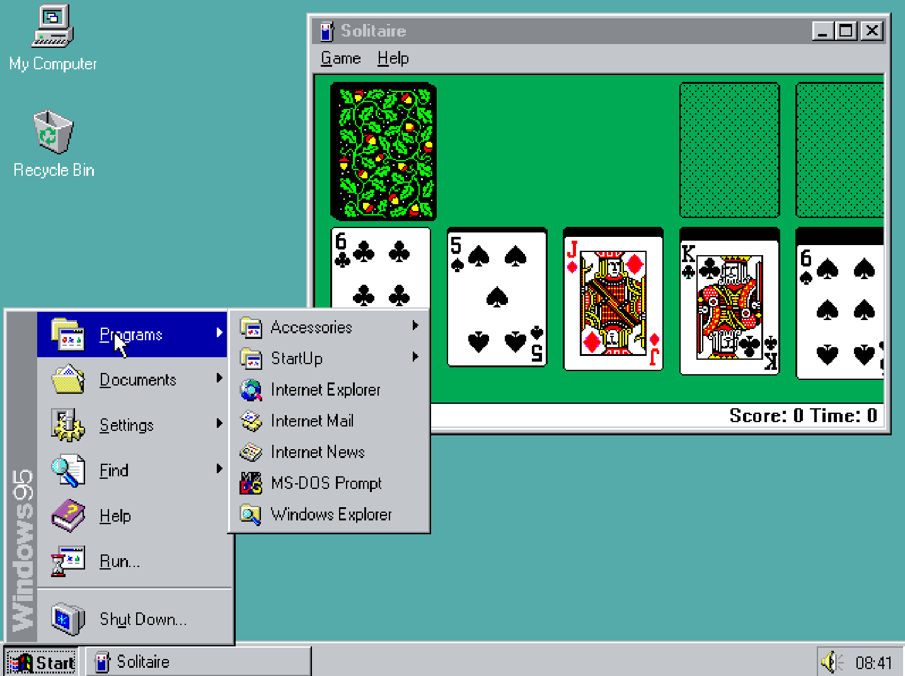
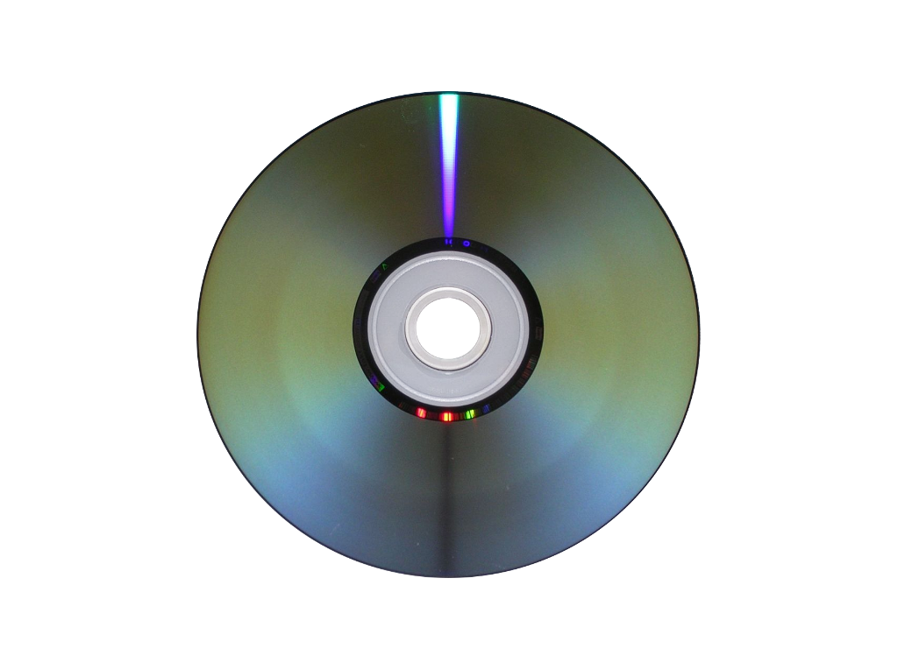

1969: Das Internet kommt zur Welt  1970 – 1979: Erste Internetprotokolle 1980 – 1989: Wandel zum modernen Internet  1990 – heute: Das World Wide Web erobert die Welt Bildnachweise: Pixabay: Free-Photos, Pixabay: CopleyNathan, Pixabay: jed_ant, old-pc-windows-95.jpg
1969, Vereinigte Staaten von Amerika Die ersten vier Rechner des ARPANET gehen online Steve Crocker schreibt den RFC #1
1971: Der Vorläufer der E-Mail wird erfunden 1973: TCP/IP war damals nur ein Protokoll 1977: Weltweite Demonstration der Technik 1979: Rogue wird das erste Multi Player Game  Bildnachweis: https://drl.chaosforge.org/images/12.png
1983: Geburt des Internets – Im ARPANET wird auf TCP/IP umgestellt 1984: Die Uni Karlsruhe empfängt die erste E-Mail Deutschlands  Foto: Uli Deck 1985: Mit symbolics.com wird die erste .com-Domain registriert 1989: Erstmals wächst das Internet auf mehr als 100.000 Teilnehmer 1989: Tim Berners-Lee skizziert seine Ideen für das World Wide Web
1990: Der Internet-Toaster wird erfunden 1991: Freigabe des Internets zur kommerziellen Nutzung 1991: Im CERN steht der erste Webserver der Welt 1993: Bereits über 500 Webserver außerhalb des CERN 1994: Pizza Hut führt die Onlinebestellung von Pizza ein 1995: Der Vatikan ist von nun an im Internet vertreten 1995: Sun veröffentlicht die Programmiersprache Java 1995: Die ersten Arbeiten zu IPv6 werden begonnen …
Alles begann mit einer einfachen Idee  Die aber auch bald ihre Kritiker fand Das World Wide Web ist ein großen Misthaufen mit ein paar Perlen drin.
Von Tim Berners-Lee erfunden HTML: Beschreibungssprache für die Dokumente und Inhalte im Web URL: Formales Schema zur Adressierung aller Web-Ressourcen HTTP: Einfaches Übertragungsprotokoll zum Abruf der HTML-Dateien Nachträglich hinzugefügt CSS: Stylesheet-Sprache zur Gestaltung von HTML-Dateien JavaScript: Einfache Sprache für interaktive Elemente im Browser WebSockets: Zusätzliches Übertragungsprotokoll zur Kommunikation mit dem Server Tim Berners-Lee im Jahr 2014 Bildnachweis: Wikipedia  Der erste Webserver der Welt. Bildnachweis: Wikipedia
 1991: Der Linux Kernel 1992: Personal Digital Assistants  1995: Taskleiste, Startmenü, Desktop und Papierkorb Bildnachweis: PCWorld  1999: Filme auf DVD Bildnachweis: Wikipedia
Daran solltest du denken … Dies war ein mittelgroßes Selbststudium, die nachfolgenden werden umfangreicher sein. (Mehr Folien, dafür weniger Text und Geschichten 🙂) Zusätzlich werden sie auch kleinere Aufgaben und Übungen beinhalten. Plane also ausreichend Zeit für dein Selbststudium ein! !
Creative Commons Namensnennung 4.0 International Beliebiges Teilen ist erlaubt Die Unterlagen dürfen bearbeitet und verändert werden Wenn die Namens- und Urheberangaben erhalten bleiben Und keine weiteren Einschränkungen auferlegt werden §